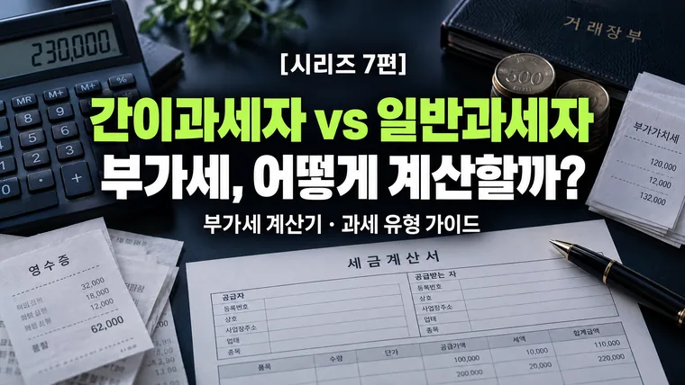

부가세 계산기로 알아보는 간이과세자 및 일반과세자의 세금 기초 가이드
부가세는 받은 부가세(매출세액)에서 낸 부가세(매입세액)를 뺀 만큼 냅니다. 간이과세자는 연 매출(공급대가) 1억 400만 원 미만 개인사업자가 대상이고, 같은 매출이라도 세금 계산 방식이 크게 다릅니다.

직장을 다니며 소소하게 스마트스토어나 블로그 마케팅, 또는 개인 프리랜서 활동을 통해 부수입을 만들기 시작하면 언젠가 마주치게 되는 큰 장벽이 있습니다. 바로 사업자등록과 부가가치세(부가세) 신고입니다.
처음 사업자등록을 신청할 때 관할 세무서나 홈택스 화면에서 가장 먼저 선택해야 하는 것이 바로 '간이과세자'와 '일반과세자'의 구분입니다. "처음엔 간이과세자가 무조건 세금이 적다"는 주변의 말만 믿고 덥석 선택했다가, 나중에 인테리어 비용이나 기계 장비 구입비의 부가세를 환급받지 못해 당황하는 사례가 빈번하게 발생합니다. 오늘은 부가세 계산기의 기본 산정 원리를 이해하고, 나에게 맞는 과세 유형을 선택하는 기준을 정리해 드리겠습니다.
1. 부가가치세(부가세)란 무엇이고 어떻게 계산될까?
부가가치세는 상품이나 서비스를 제공하는 과정에서 새롭게 창출되는 '부가가치'에 대해 부과되는 세금입니다. 중요한 점은 이 세금이 사업자 본인의 돈이 아니라 소비자가 대신 내준 돈을 잠시 보관했다가 국가에 납부하는 구조라는 사실입니다.
우리가 편의점에서 1,100원짜리 음료수를 살 때, 실제 물건값은 1,000원이고 나머지 100원은 부가가치세(10%)입니다. 사업자는 이 100원을 잘 모아두었다가 정해진 기간에 세무서에 납부하게 됩니다.
납부세액 = 매출세액 − 매입세액
· 매출세액: 고객에게 물건이나 서비스를 팔고 받은 부가세 (매출액의 10%)
· 매입세액: 사업을 위해 원재료, 장비, 사무실 임차료 등을 구입하며 지불한 부가세 (매입액의 10%)
만약 한 달 동안 1,000만 원(공급가액)의 매출을 올려 100만 원의 부가세를 받았고, 사업용 컴퓨터와 재료비로 600만 원(공급가액)을 지출하며 60만 원의 부가세를 지불했다면, 내가 실제 세무서에 납부할 부가세는 40만 원(100만 원 − 60만 원)이 됩니다.
2. 간이과세자 vs 일반과세자 핵심 차이점
정부는 연간 매출 규모가 작은 소상공인의 세금 부담과 신고 절차를 덜어주기 위해 '간이과세' 제도를 운영하고 있습니다. 두 과세 유형의 차이를 파악하는 것이 세금 관리의 첫걸음입니다.
| 구분 | 간이과세자 | 일반과세자 |
|---|---|---|
| 적용 기준 | 직전 연도 연 매출(공급대가) 1억 400만 원 미만 (부동산임대업·유흥업소 등은 4,800만 원 미만) | 1억 400만 원 이상이거나 간이과세 배제 업종·지역 |
| 세율 | 업종별 부가가치율(15~40%) × 10% = 1.5~4.0% | 10% |
| 매입세액 공제 | 세금계산서 등을 받은 매입 공급대가의 0.5%만 공제, 환급 없음 | 매입세액 전액 공제, 매입이 많으면 환급 |
| 납부 면제 | 해당 연도 공급대가 4,800만 원 미만이면 납부 면제 (신고는 해야 함) | 없음 |
| 세금계산서 | 직전 연도 공급대가 4,800만 원 미만이면 발급 불가(영수증만), 4,800만~1억 400만 원이면 발급 의무 | 발급 가능(의무) |
일반과세자는 매출세액에서 매입세액을 차감하므로, 매입이 매출보다 많으면 차액을 환급받을 수 있습니다. 간이과세자는 세금 부담은 훨씬 적지만, 매입이 아무리 많아도 환급을 받지 못합니다.
연 매출(공급대가) 5,000만 원, 매입 1,000만 원(부가세 포함)
· 간이과세자: 5,000만 원 × 15% × 10% = 75만 원, 매입 공제 1,000만 원 × 0.5% = 5만 원 → 납부 약 70만 원
· 일반과세자: 매출세액 약 454만 5천 원 − 매입세액 약 90만 9천 원 → 납부 약 364만 원
부가가치율은 업종마다 다르고, 일반과세자는 매입이 늘수록 세금이 줄어듭니다.
3. 부가세 계산기 활용 및 과세 유형 선택 실전 전략
부가세 계산기에 본인의 예상 매출과 매입 금액을 입력할 때, 다음 상황을 비교하여 과세 유형을 선택해야 합니다.
초기 인테리어/장비 투자가 많은 경우 ➔ [일반과세자] 고려
식당이나 카페, 제조업처럼 초기에 수천만 원 상당의 인테리어 비용이나 기계 설비 구매비가 들어가는 사업이라면, 매입세액이 매출세액보다 훨씬 큽니다. 이때 일반과세자로 시작하면 지불했던 부가세 10%를 환급받아 초기 자금으로 재활용할 수 있습니다.
소자본 창업 / 서비스업 ➔ [간이과세자] 유리
지식 서비스업, 소규모 온·오프라인 쇼핑몰 등 초기 설비 투자비가 거의 없고 인건비나 운용비 중심인 사업은 매입세액으로 공제받을 금액이 적습니다. 따라서 업종별 낮은 부가가치율이 적용되는 간이과세자로 시작하는 것이 유리할 수 있습니다. 다만 개인이 독립적으로 제공하는 일부 인적용역(프리랜서 등)은 부가세가 면제되는 경우가 있어 사업 유형에 따라 해당하지 않을 수 있습니다.
B2B(기업 간 거래) 비중이 높은 경우 ➔ [일반과세자] 필수에 가까움
내 주요 고객이 일반 소비자가 아닌 '기업/법인사업자'라면 거래처에서 세금계산서 발행을 요구합니다. 세금계산서를 발급해주지 못하는 간이과세자는 거래 대상에서 제외될 위험이 있으므로 처음부터 일반과세자로 등록하는 것이 안전합니다.
4. 사업자 세금 관리를 위한 필수 체크리스트
- 사업용 신용카드 등록: 홈택스 사이트에 본인 명의의 신용카드/체크카드를 '사업용 신용카드'로 미리 등록해 두세요. 사업 관련 지출 내역을 한곳에서 확인하고 정리하기 쉬워집니다.
- 현금영수증 및 세금계산서 수취: 사업 관련 지출 시 반드시 '지출증빙용 현금영수증'이나 '세금계산서'를 받아두어야 부가세 공제 및 종합소득세 경비 처리가 가능합니다.
- 신고 기한 준수: 일반과세자는 1년에 2번(1월, 7월) 부가세를 신고·납부하고 개인사업자는 4월·10월에 직전 납부세액의 절반이 예정고지됩니다. 간이과세자는 1년에 1번(1월) 신고·납부하며 세금계산서 발급 의무가 있는 간이과세자는 7월 예정신고가 추가됩니다. 기한을 넘기면 가산세가 부과됩니다.
· 부가가치세는 매출세액(받은 부가세)에서 매입세액(낸 부가세)을 차감하여 납부하는 구조입니다.
· 초기 설비 투자비나 매입 지출이 커서 부가세 환급을 받아야 한다면 일반과세자, 초기 비용이 적고 소규모라면 간이과세자가 유리할 수 있습니다.
· 사업 초기부터 홈택스에 '사업용 신용카드'를 등록하고 적격증빙을 수집하는 습관을 들여야 절세할 수 있습니다.
이 글의 요율·한도·금액은 2026년 10월 기준입니다. 법령이나 제도가 바뀌면 숫자가 달라질 수 있으니, 신고·가입·계약 전에는 국세청·금융위원회·관련 공단·금융기관에서 최신 기준을 확인하세요. 계산 결과는 참고용입니다.
🔮 다음 편 예고
다음 8편에서는 대출을 상환할 때 발생하는 대표적 비용인 "대출 중도상환수수료 계산기: 언제 갚아야 가장 수수료가 적을까?"를 다룹니다. 대출을 중도에 상환할 때 발생하는 수수료의 산정 구조와 수수료 감면 시점을 따져보는 전략을 알아보겠습니다.
💬 함께 나누는 질문
부업이나 사업을 준비하면서 세금 계산이나 과세 유형 선택 시 가장 어렵게 느껴졌던 점은 무엇이었나요?